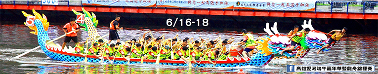

| 活動開始日期 | 2018/3/12 | 活動結束日期 | 2018/3/12 | 活動地點 |
| 報名截止日期 | 2018/3/12 | 已報名人數 | 10 | 臺東縣臺東市台東縣中興路二段366巷36號 |
| 徵求人數 | 10 |
提供福利 |
|
| 礦泉水 | |
| 保險 | |
| 紀念品 | |
活動內容 |
|
| 2011 年，從一個想和失智症者一起做些什麼的起心動念，促成從日本函館到札幌三百公里的第一步，連續7 年的陪伴活動，累計15,200 公里的見證、27,538人參與（含失智症者2,090 人），2016 年達成縱貫日本（北海道→沖繩）。2017 年海外首站選擇臺灣。 臺灣預計自2017 年至2019 年，挑戰近百個鄉鎮市，達成繞行臺灣一圈的目標。 今年活動將於11月份每週六、日各一縣市，從最北端基隆為起站，經臺北市、新北市、桃園市、新竹縣、新竹市、苗栗縣至臺中市，預計招募3,000 人挑戰1,000公里的感動。 | |